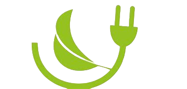

One of the most efficient ways to contribute to a sustainable
future is by reducing our personal carbon footprint.
Embrace Energy Efficiency: Make a commitment to reduce energy consumption in your daily life.
Switch to energy-efficient appliances, turn off lights when not in use, unplug electronics, and
adjust your thermostat to conserve energy.
Choose environmentally friendly modes of transportation
whenever possible. Walk, bike, or use public transportation instead of relying on personal vehicles.
When buying vehicles buy hybrid or fully electric vehicles.

Adopt a Zero Waste Mindset
Strive to minimize waste generation by practicing the 3Rs.Reduce your consumption, reuse items
when possible, and recycle responsibly.
Compost organic waste and choose reusable alternatives
to single-use items like bottles, bags, and cutlery.
Opt for digital copies of documents and emails
rather than printing them.
When ordering/buying food only buy what you can eat instead of buying alot and
throwing away the leftovers.
Bring reusable bags when grocery shopping instead of using plastic bags. Use
cloth napkins or reusable handkerchiefs instead of disposable tissues.
Donate or sell items you no longer need instead of throwing them away.
Repurpose glass jars and containers for storage.
Promote Change
Make an impact by speaking up about environmental issues
and motivating others to take action.
Participate in neighborhood programs that
advance sustainability. This can entail taking part in neighborhood cleanup
initiatives, tree-planting festivals, or awareness campaigns. You not only make
a real difference by actively participating in such projects, but you also motivate
others to follow your lead.
Social media channels can be used to spread
sustainable living knowledge,
resources, and advice.